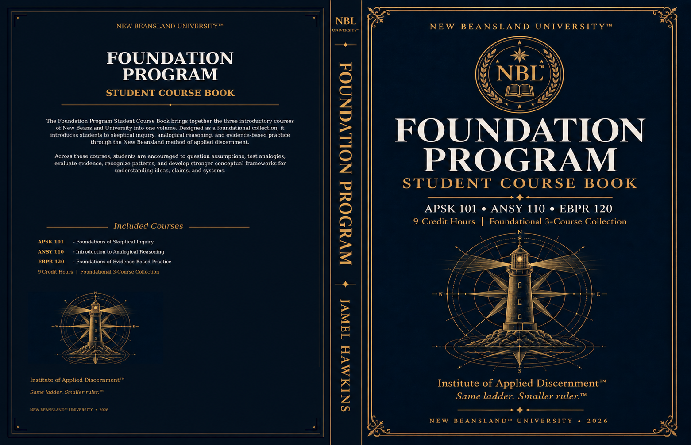
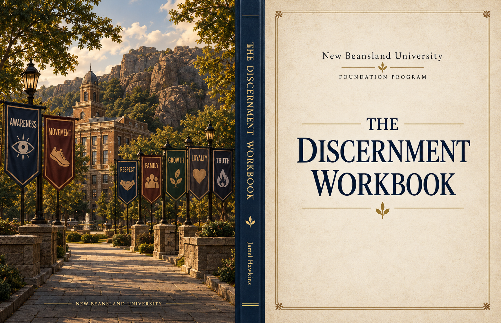

01 · Course materials
Two physical books
The Foundation Program Student Course Book and The Discernment Workbook are included and fulfilled through NBL Books to the shipping address supplied at checkout.
The entrance
This is the threshold statement for the New Beansland Institute of Applied Inquiry—the place where the Foundation Program begins.
Institute of Applied Inquiry · Foundation Program in Applied Discernment
The New Beansland Foundation Program brings together skeptical inquiry, analogical reasoning, and evidence-based practice in one three-course path.


Included with enrollment
The physical books are mailed after enrollment through NBL Books. New Beansland sends the digital editions to the checkout email so the student does not need to wait for the printed books to begin.
The Foundation Program Student Course Book and The Discernment Workbook are included and fulfilled through NBL Books to the shipping address supplied at checkout.
Digital copies are delivered by New Beansland after enrollment so coursework can begin while the physical books are in transit.
Complete the required coursework, become eligible for the official final examination, meet the 90% passing standard, and receive a personalized printed NBL completion certificate with an official serial-number record.
The three-course Foundation sequence
The finish line is physical
After you complete all three Foundation courses and pass the official final examination with a score of 90% or higher, New Beansland prepares a personalized printed Foundation Program completion certificate and mails it to you at no separate certificate or shipping charge.
NBL-FND-2026-000001. It is not a barcode, ISBN, license number, or outside credential number.Foundation Program · Launch enrollment
Checkout is handled securely by Stripe. New Beansland handles digital-book delivery, NBL Books fulfills the included physical books, and New Beansland prepares the personalized printed certificate after successful completion.
Enroll in the Foundation ProgramLaunch checkout is currently limited to U.S. shipping. New Beansland is an independent educational and creative program. The completion certificate verifies completion of the New Beansland Foundation Program; it is not presented as an accredited college degree or professional license.